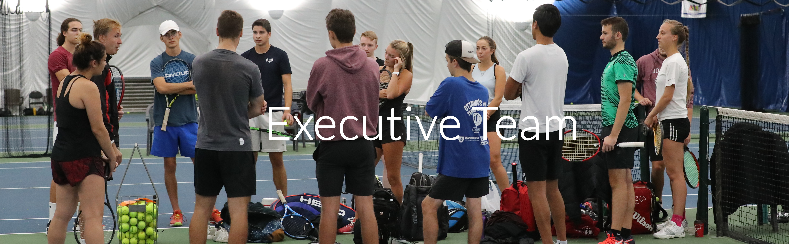

Équipe 2019-20
L'équipe de direction du Club de tennis de l'Université d'Ottawa est composée de cinq étudiants passionnés et travailleurs de l'Université d'Ottawa qui se consacrent à la croissance, à l'amélioration et à la promotion du Club de tennis de l'Université d'Ottawa. Chaque étudiant de l'équipe exécutive occupe un rôle respectif: Président, Trésorier, Communications, Marketing, et Développement du site web. Les étudiants responsables de chaque rôle sont présentés ci-dessous, ainsi qu'une biographie sur leur identité. Pour plus d'informations concernant les rôles spécifiques de l'équipe exécutive de l'UOTC, veuillez vous référer à la constitution de notre club.
Meet the Team!

Ryan Zanganeh
Ryan Zanganeh est le Président du Club de Tennis de l’Université d’Ottawa. Depuis qu'il a commencé le tennis à l'âge de six ans, il s'entraîne, fait de la compétition et enseigne aux enfants et aux adolescents comment jouer au tennis. Ayant consacré plus de 14 ans de sa vie à ce sport, Ryan se rend compte des impacts physiques et mentaux positifs substantiels que peut jouer le tennis sur la vie d'une personne.
Ryan est actuellement un étudiant de 3e année qui étudie en sciences de l'activité physique avec distinction à l'Université d'Ottawa. Il a fait un TedTalk sur la maladie de Crohn et termine actuellement un protocole de coiffe des rotateurs postopératoire. Ryan poursuit une carrière en dentisterie et s'intéresse aux spécialités de la pédiatrie et de la chirurgie orale.

Jacob Leong
Jacob Leong est le Trésorier du Club de Tennis de l'Université d'Ottawa. Jouant au tennis depuis l'âge de trois ans, il a été plongé dans le sport pendant la grande majorité de sa vie, 7 de ces années consacrées à l'entraînement de compétition. Cette immersion l'a amené à bien maîtriser à la fois l'aspect mental et physique du tennis, lui donnant les connaissances nécessaires pour créer un plan d'entraînement complet pour l'équipe ainsi que pour conseiller les entraîneurs sur la façon d'améliorer l'état d'esprit mental global de l’équipe tout en jouant.
Il est actuellement étudiant en 2e année et étudie en sciences biomédicales spécialisé en neurosciences. Sa croyance en la relation positive et enrichissante entre le sport et la psyché humaine le conduit à continuer à être un ambassadeur du tennis, aidant les gens de tous âges à découvrir l'amour du sport et l'épanouissement qu'il apporte.

Sara Zeineddine
Sara Zeineddine est la Responsable des Communications de l'équipe de tennis de l'Université d'Ottawa. Elle entame sa 3e année au programme de Science Politique. Elle est très investie dans la promotion du Club de Tennis de l'Université d'Ottawa, notamment sur les réseaux sociaux. Sara parle quatre langues telles que le français, l'anglais, l'espagnol, l'arabe et apprend actuellement le russe en tant que nouvelle langue, ce qui est un grand atout pour le poste de Responsable des Communication.
Elle joue au tennis depuis son plus jeune âge. Elle a toujours partagé son amour pour le tennis, avec sa famille, ses amis et même des étrangers. Elle a participé à des compétitions nationales et internationales. Elle a également joué et participé pendant plusieurs années au UP Club de Cornellà de Llobregat et à l'Académie Sánchez-Casal de Barcelone, en Espagne.

Luka David
Luka David est le Responsable du développement du site Web de l'UOTC. Il entame sa deuxième année en génie logiciel et a commencé à jouer pour l'équipe en septembre dernier. Avant de venir à l'Université d'Ottawa, Luka a fait de la compétition principalement aux États-Unis tout en allant à l'école à Windsor, en Ontario. Il a commencé à coder en dixième année et après avoir suivi rapidement quelques cours d'informatique et participé à quelques hack-a-thons, il a décidé de poursuivre son amour de la technologie à l'Université.
Luka est un fan de tennis, un joueur passionné et une entraîneur patient. Il a présenté l'idée de faire le site Web au Comité Exécutif et s'est fixé un objectif personnel d'aider l'équipe dans tous les aspects, pas seulement techniques. Son objectif est de promouvoir la réputation de l'Université sur et en dehors du terrain.